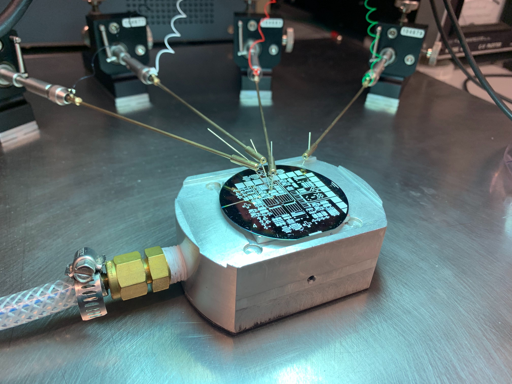
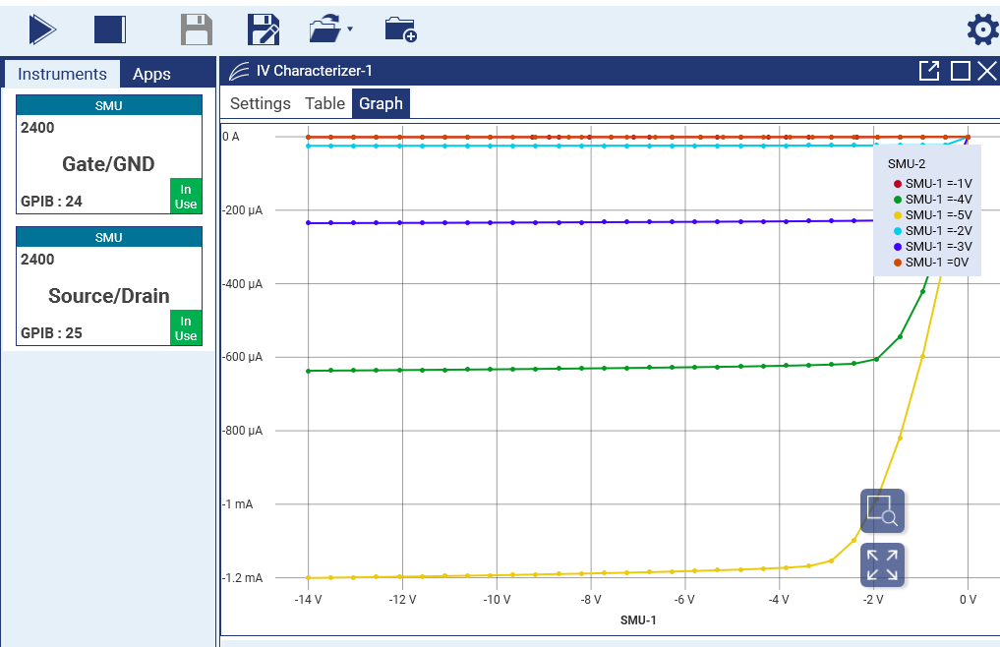
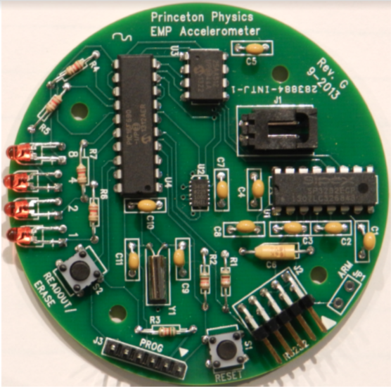

I am very interested in giving all students opportunities to learn physics and its practical applications. Here is a summary of my experience:
PHY 109: Physics Methods and Applications - Spring 2020 (Princeton, TA): PHY 109 will focus on physics concepts, methodologies, and problem solving techniques, with a selection of topics drawn from the PHY 103 and 104 curriculum. PHY 109 has no lab component. The goal of the course is a mastery of mechanics (PHY 103), together with the related mathematical tools, and a first exposure to concepts from electricity and magnetism (PHY 104). This is the first course in a two-course sequence, concluding with PHY 110 in the summer term. Typical enrollment: 10 freshman undergraduate students.
ELE 308: Electronic and Photonic Devices - Fall 2019 (Princeton, TA): Introduction to semiconductor devices centered around modern devices and technologies. Explores the physical basis of complex technologies from the perspective of solid state physics, electricity and magnetism, statistical mechanics, and quantum mechanics. Applications to be discussed include lighting, displays, computing, energy harvesting, sensing and imaging. Laboratory: fundamentals of micro- and nano-fabrication, fabrication of integrated circuits and optoelectronic devices. Typical enrollment: 25 sophomore/junior undergraduate students.


EGR 150: Foundations of Engineering - Summer 2019 (Princeton, Instructor): This course provides a hands-on introduction to the foundational principles of engineering. It gives a project-based introduction to engineering that mixes electronics, mechanical construction, and computational data analysis, while providing a firm theoretical foundation for the project in both math and physics. In lab, students learn MATLAB, soldering, and PCB assembly when they construct an accelerometer board, which they then use to explore the kinematics of elevators, drones, and a final project of their choosing. Typical enrollment: 20 incoming freshman undergraduate students. See gallery of student work here.
